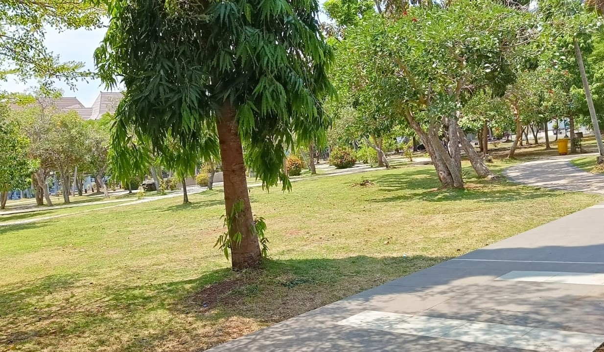

Menjaga lingkungan sangatlah penting untuk menjaga lingkungan
agar terciptanya lingkungan yang sehat..accoundDinas.Lingkungan.Hidup
Dengan tidak membuang sampah limbah sembarangan dan juga sampah rumah tangga,
kalian juga dapat mendaur ulang sampah rumah tangga..accoundDinas.Lingkungan.Hidup
Kalian dapat memanfaatkan sampah organik agar dapat di manfaatkan sebagai pengganti pupuk
tanaman yang lebih ramah lingkungan..accoundDinas.Lingkungan.Hidup

Kebersihan
Membuang sampah pada tempatnya dapat mengurangi pencemaran lingkungan